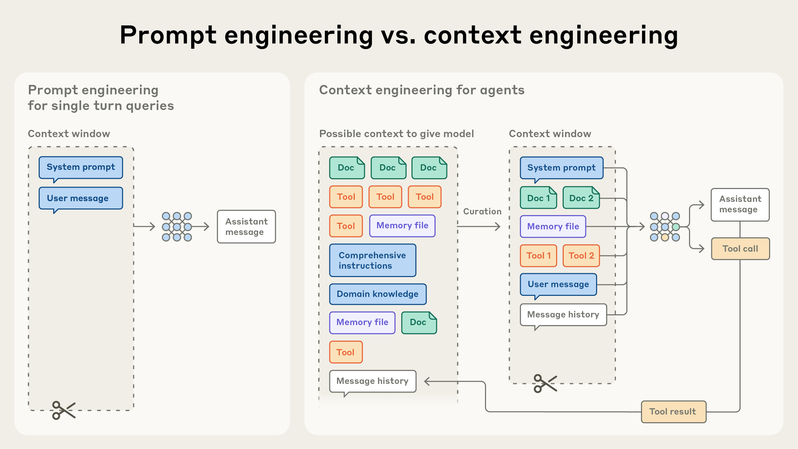
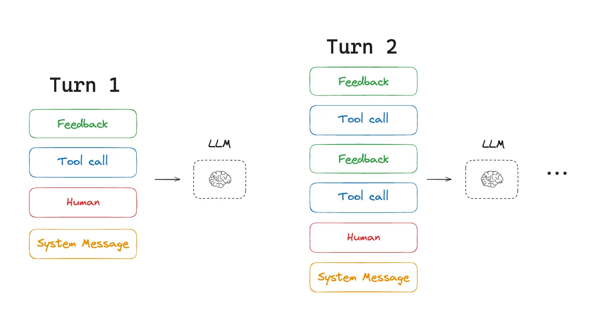
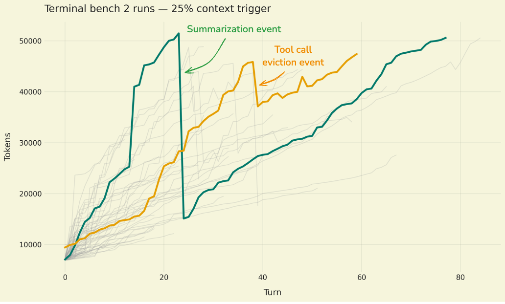
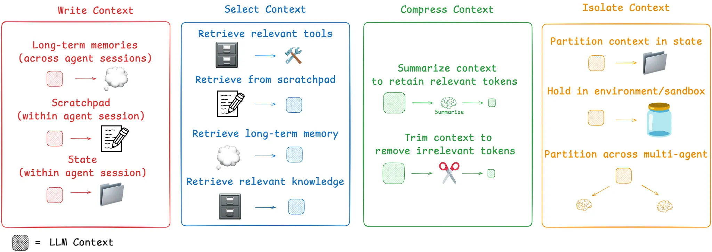
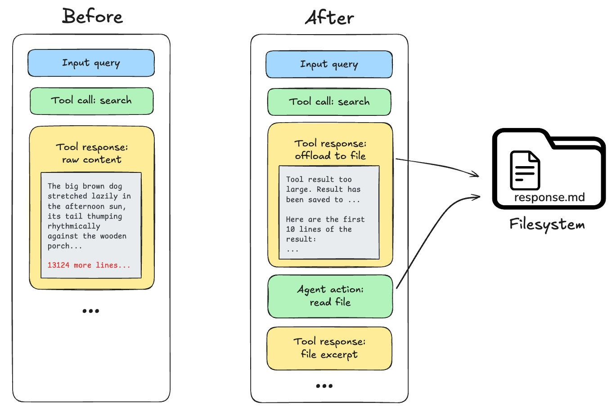
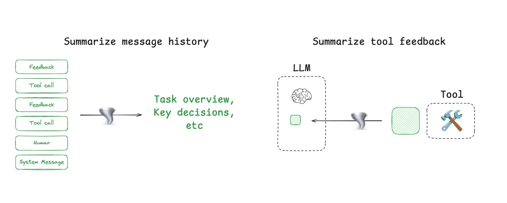
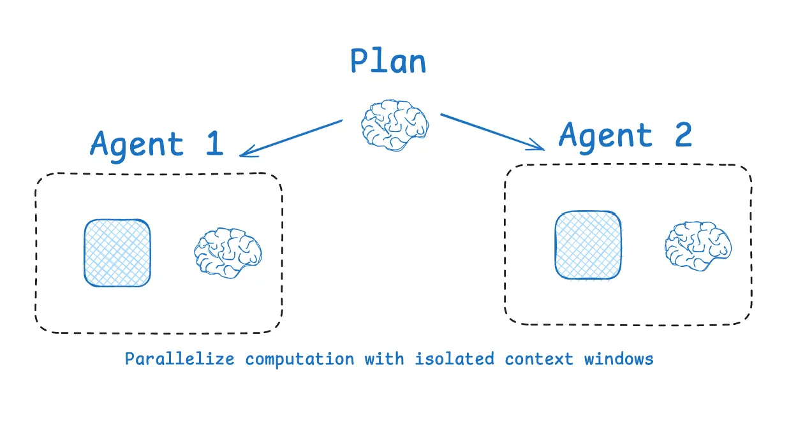

Context Management for Deep Agents#
Duration: 35 minutes
Learning Objectives:
Recognize “context rot” in multi-turn agent conversations
Understand offloading strategies for large tool results
Implement summarization to compress conversation history
Appreciate the v1 → v2 improvement opportunity
The Problem: Context Rot#
Multi-turn agents accumulate context with every interaction. Eventually, this leads to context rot—degraded performance as the context window fills up and important earlier information gets “pushed out.”
The agent loop that creates this problem follows the ReAct paradigm introduced by Yao et al. (2023), which established the pattern of interleaving reasoning traces with actions. This Thought → Action → Observation cycle is now the foundation of every major agent framework, including LangGraph and Claude Code. As agents tackle increasingly complex tasks—Kwa et al. (2025) document that AI task-completion time horizons have been doubling every 7 months—context management becomes the bottleneck that determines whether an agent can complete multi-hour workflows.
Key Papers
Yao, S., Zhao, J., Yu, D., et al. (2023). “ReAct: Synergizing Reasoning and Acting in Language Models.” ICLR 2023.
Kwa, T., et al. (2025). “Measuring AI Ability to Complete Long Tasks.” METR.

Unlike discrete prompt engineering, context engineering is an iterative process that happens throughout an agent’s execution. Source: Anthropic
Demo: Watch Context Degrade#
Try this sequence with FlawedCode + ChartBook tools:
1. "List ChartBook dataframes"
2. "Get docs for yield_curve/repo_public" ← ~5000 chars
3. "Now get docs for money_markets/sofr" ← ~3000 more chars
4. "Load 50 rows of SOFR data" ← ~2000 more chars
5. "Get docs for treasury_yields" ← ~4000 more chars
6. "What was my original goal?" ← Agent struggles!
By step 6, the agent may have forgotten the conversation’s purpose. The early messages—including your goals and previous insights—are compressed or lost as new content fills the window.

Token usage grows with each agent turn as tool calls and results accumulate. Source: LangChain
Visualizing Context Fill#
┌────────────────────────────────────────────────────────────────┐
│ CONTEXT WINDOW (128K tokens) │
├────────────────────────────────────────────────────────────────┤
│████████████████████████████████████████████░░░░░░░░░░░░░░░░░░░│
│ ↑ ↑ │
│ Start: System prompt, goals, early turns End: Latest content │
│ │
│ As context fills, LLM attention to early content decreases │
└────────────────────────────────────────────────────────────────┘
After many turns:
┌────────────────────────────────────────────────────────────────┐
│████████████████████████████████████████████████████████████████│
│ Context is FULL - new content pushes out old context │
│ or summarization kicks in, losing detail │
└────────────────────────────────────────────────────────────────┘

Real token usage patterns during agent runs. Notice how context grows over time and compression events reduce usage. Source: LangChain
The LangChain Context Management Framework#
LangChain’s blog post Context Management for Deep Agents outlines three core strategies:

Four primary strategies for managing context: write (add information), select (retrieve relevant context), compress (summarize), and isolate (distribute across agents). Source: LangChain
Problem |
Solution |
When to Use |
|---|---|---|
Large tool results fill context |
Offload to filesystem |
Tool result > threshold |
Context grows unbounded |
Summarize history |
Context usage > 80% |
Lost information needed later |
Archive + search |
Complex multi-step tasks |
Let’s implement each technique.
Technique 1: Offload Large Results#
When a tool returns more content than needed in immediate context, save it to disk and keep only a preview. This offload-and-retrieve pattern mirrors the core insight of Retrieval-Augmented Generation (Lewis et al., 2020): rather than keeping everything in context, store information externally and retrieve it when needed.

When tool responses exceed a threshold (e.g., 20K tokens), the full content is saved to the filesystem and only a preview with a file path reference remains in context. Source: LangChain
The Strategy#
Tool returns large result
↓
Check if result > THRESHOLD
↓ Yes ↓ No
┌─────────────────────┐ ┌──────────────────┐
│ Save to scratch/ │ │ Return as-is │
│ Return preview + │ │ │
│ file path │ │ │
└─────────────────────┘ └──────────────────┘
Implementation#
from pathlib import Path
from uuid import uuid4
LARGE_RESULT_THRESHOLD = 5000 # characters
SCRATCH_DIR = Path("scratch")
SCRATCH_DIR.mkdir(exist_ok=True)
def estimate_tokens(text: str) -> int:
"""Rough token estimate: ~4 chars per token."""
return len(text) // 4
def maybe_offload(result: str, tool_name: str) -> str:
"""Offload large results to filesystem, return preview."""
if len(result) > LARGE_RESULT_THRESHOLD:
# Generate unique filename
filename = f"{tool_name}_{uuid4().hex[:8]}.txt"
filepath = SCRATCH_DIR / filename
# Save full result
filepath.write_text(result)
# Create preview (first 500 chars + summary)
preview = result[:500]
lines_count = result.count('\n')
char_count = len(result)
return f"""[Saved to scratch/{filename}]
[{char_count} characters, {lines_count} lines]
Preview:
{preview}...
Use read_file('scratch/{filename}') to see the full content."""
return result
Integrating with Tools#
Wrap the offload logic around tool results:
@tool
def chartbook_get_docs(pipeline: str, dataframe: str) -> str:
"""Get documentation for a ChartBook dataframe."""
docs = data.get_docs(pipeline=pipeline, dataframe=dataframe)
# Offload if too large
return maybe_offload(docs, f"docs_{pipeline}_{dataframe}")
Example Output#
Before offloading:
[chartbook_get_docs] {"pipeline": "yield_curve", "dataframe": "repo_public"}
→ # repo_public
Federal Reserve Repo Operations Data
## Column Definitions
| Column | Type | Description |
| observation_date | date | The date... |
| total_amt_accepted | float | Total amount... |
... [5000+ characters in context]
After offloading:
[chartbook_get_docs] {"pipeline": "yield_curve", "dataframe": "repo_public"}
→ [Saved to scratch/docs_yield_curve_repo_public_a1b2c3d4.txt]
[5234 characters, 89 lines]
Preview:
# repo_public
Federal Reserve Repo Operations Data
## Column Definitions
| Column | Type | Description |
| observation_date | date | The date...
Use read_file('scratch/docs_yield_curve_repo_public_a1b2c3d4.txt')
to see the full content.
Discussion Question#
How do you decide what goes in the preview?
First 500 characters? First and last 250? Key sections? Column names only?
Technique 2: Summarization at Threshold#
When context usage exceeds a threshold, compress the conversation history while preserving key information.

Summarization can be applied at multiple points in an agent workflow—after tool calls, at turn boundaries, or when context reaches a threshold. Source: LangChain
The Strategy#
Before each turn:
↓
Check context usage
↓
Usage > 80% of limit?
↓ Yes ↓ No
┌───────────────────────────┐ ┌──────────────────┐
│ 1. Archive full context │ │ Continue as-is │
│ 2. Summarize with LLM │ │ │
│ 3. Replace with summary │ │ │
└───────────────────────────┘ └──────────────────┘
Implementation#
import json
CONTEXT_THRESHOLD = 0.80 # 80% of model limit
MODEL_CONTEXT_LIMIT = 128000 # tokens
ARCHIVE_DIR = Path("archives")
ARCHIVE_DIR.mkdir(exist_ok=True)
SUMMARIZATION_PROMPT = """Summarize this conversation for an AI assistant that will continue the work.
Preserve:
1. The user's original goal and any stated objectives
2. Key decisions made and their rationale
3. Important findings or results (especially numbers)
4. Files that were read, modified, or created
5. Current state of any ongoing task
Format as a structured summary the assistant can use to continue effectively.
Keep it under 2000 characters.
Conversation:
{conversation}"""
def get_context_usage(messages: list) -> float:
"""Estimate current context usage as fraction of limit."""
total_chars = sum(len(str(m)) for m in messages)
total_tokens = total_chars // 4
return total_tokens / MODEL_CONTEXT_LIMIT
def archive_context(messages: list) -> str:
"""Save full context to disk for potential recovery."""
filename = f"archive_{uuid4().hex[:8]}.json"
filepath = ARCHIVE_DIR / filename
filepath.write_text(json.dumps(messages, indent=2, default=str))
return str(filepath)
def maybe_summarize(messages: list, llm) -> list:
"""Summarize conversation if context is getting full."""
usage = get_context_usage(messages)
if usage > CONTEXT_THRESHOLD:
print(f"[Context at {usage:.0%} - summarizing...]")
# Archive full context
archive_path = archive_context(messages)
# Generate summary
conversation_text = "\n".join(
f"{m.get('role', 'unknown')}: {str(m.get('content', ''))[:500]}"
for m in messages
)
summary = llm.invoke([
SystemMessage(content=SUMMARIZATION_PROMPT.format(
conversation=conversation_text
))
])
# Return compressed context
return [
SystemMessage(content=f"""Previous conversation summarized (full archive: {archive_path}):
{summary.content}
Continue assisting the user from here.""")
]
return messages
Summarization Prompt Design#
The summary should preserve:
Goals - What the user is trying to accomplish
Decisions - Choices made and why
Results - Key findings, especially numbers
State - What files exist, what’s been modified
Next steps - What was about to happen
Example Summary#
## Conversation Summary
**User Goal**: Analyze SOFR trends and compare to EFFR rates
**Actions Taken**:
- Listed ChartBook dataframes (yield_curve, money_markets available)
- Retrieved documentation for repo_public (44 columns, saved to scratch/)
- Loaded 30 days of SOFR data (average: 5.32%)
- Loaded 30 days of EFFR data (average: 5.33%)
**Key Findings**:
- EFFR averages 1bp higher than SOFR over the period
- Both rates stable around 5.32-5.33%
**Files Created**:
- scratch/docs_yield_curve_repo_public_a1b2c3d4.txt
- scratch/sofr_analysis.py
**Current State**: User asked for a visualization of the spread.
FlawedCode Version Progression#
With these techniques, we can now define the agent versions for benchmarking:
Version |
Features |
Context Strategy |
|---|---|---|
v0 |
Basic ReAct, no memory |
None - single turn only |
v1 |
Conversation memory |
Unbounded accumulation |
v2 |
+ Offloading + Summarization |
Active management |
Claude Code |
Full production system |
Sophisticated multi-strategy |
What v2 Adds#
# v1: Simple memory accumulation
while True:
messages.append(("user", user_input))
response = agent.invoke({"messages": messages})
messages.append(response)
# v2: Active context management
while True:
messages.append(("user", user_input))
# Summarize if context is filling up
messages = maybe_summarize(messages, llm)
response = agent.invoke({"messages": messages})
# Offload large tool results
for msg in response["messages"]:
if is_tool_result(msg):
msg.content = maybe_offload(msg.content, msg.tool_name)
messages.extend(response["messages"])
Hands-On Exercise: Identify Offloading Candidates#
Look at the ChartBook tools and answer:
Which tools return large results?
chartbook_get_docs- documentation (large)chartbook_load_data- data tables (potentially large)chartbook_list- catalog (small)
What preview length is appropriate?
Documentation: First 500 chars + column list
Data: First 10 rows + summary statistics
Large files: First/last 250 chars
What triggers summarization?
80% context usage
More than 20 turns
Explicit “start fresh” command
Key Takeaways#
Context is finite - Active management is required for long-running agents
Offloading keeps large results accessible - Save to disk, keep preview in context
Summarization preserves goals - Compress history while retaining essentials
v1 → v2 is a meaningful improvement - Same model, better architecture
These techniques compound - Offloading reduces summarization frequency
Architecture Comparison#
For complex tasks, another powerful strategy is context isolation—distributing work across specialized sub-agents, each with their own focused context window. Kim et al. (2024) formalized parallel execution approaches in LLMCompiler, demonstrating 3.7× latency reduction through optimized function orchestration—a technique that becomes essential when managing context in multi-tool workflows.
Additional Reading
Lewis, P., et al. (2020). “Retrieval-Augmented Generation for Knowledge-Intensive NLP Tasks.” NeurIPS 2020. — The foundational RAG paper that established the pattern of offloading knowledge to external retrieval.
Kim, S., Moon, S., Tabrizi, R., et al. (2024). “An LLM Compiler for Parallel Function Calling.” — Applies compiler optimization principles to agent tool execution.

Multi-agent architectures distribute context across specialized sub-agents. Each agent maintains focused context for its domain while an orchestrator coordinates the overall task. Source: LangChain
v1 Architecture:
┌──────────────────────────────────────────────────────┐
│ User → Agent → Tools → Results → All in Context → ∞ │
└──────────────────────────────────────────────────────┘
v2 Architecture:
┌────────────────────────────────────────────────────────────────┐
│ User → Agent → Tools → Results │
│ ↓ │
│ Large result? → Offload to scratch/ │
│ ↓ │
│ Context full? → Summarize + Archive │
│ ↓ │
│ Continue with managed context │
└────────────────────────────────────────────────────────────────┘
Discussion Questions#
How do you decide what goes in the preview?
Think about what information is needed for immediate decisions vs. detailed reference.
When should summarization trigger?
80% is a heuristic. What factors might change this threshold?
What happens if the summary loses critical information?
That’s why we archive! Design for recovery.
Next Steps#
Now that we understand context management, let’s measure its impact systematically with Agent Benchmarking.